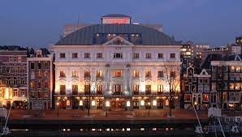
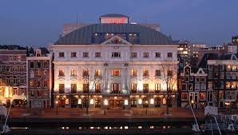

This page show the best theaters in the Netherlands
Tushinsky Theater

This theater -
famous landmark of Amsterdam. It was built by order of the Dutch businessman Tushkinsky.
The theater building is well known for its architecture.
The Amsterdam City Theater

The Amsterdam City Theater is the main dramatic and multifunctional theater in the capital of the Netherlands.
Opened at the beginning of 1638, it became the first permanent theater in the Netherlands. Plays, drama and opera in different languages are shown in this theater.
The Royal Theater Carre

The Royal Theater Carre,theatre was founded in 1887, it was originally meant as a permanent circus building.Today, the Royal Carré Theater is used for musicals, comedies, operas, cabaret and theater. Popular national and international artists regularly perform at the Carré.
Theater Batrix
The theater building was built in 1999 in Urchest by architect Arno Meijs.
In 2003 it was reconstructed. In this theater there is an exhibition of paintings by contemporary artists.
Efteling Theatre
The theater opened in 2002 on the site of Kaatsheuvel, while the building was unfinished. In 2003, the construction of the theater was completed with a facade in the style of Anton Peak.
Сontact with the developer


Tushinsky Theater
The Amsterdam City Theater
The Royal Theater Carre
Theater Batrix
Efteling Theatre
Сontact with the developer